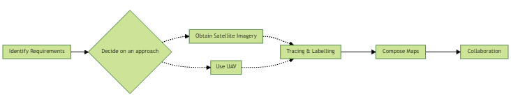

Site Mapping Guide
Introduction
Last updated: 1st November 2022
Welcome to SiteMapping.Guide, an online guidance for the production of site maps in humanitarian response. Site maps are a key resource at all stages of a camp lifecycle; from the site planning of empty or partially settled land; the coordination and management of services on a site; the development and improvement of a sites’ infrastructure; to the site closure/handover/decommissioning stage.
This guidance is in draft-stage, much of the content is missing and its structure may be subject to change.
The aim of this guidance is fourfold:
Open up the process of developing site maps to more humanitarian actors and profiles as well as mainstream site mapping skills and reduce reliance on a limited pool of specialized profiles.
Increase the speed at which site maps are developed. The shorter the lead time for creating site maps, the more useful they are for planning activities and coordinating partners in site, especially in sudden onset contexts.
Scale the availability of site maps to increase their benefit to reponses in a wider number of sites as well as in a wider number of countries.
Encourage the creation of consistent site map products, in terms of visuals, quality and process that are affected population-centric and that adhere to data responsibility and safeguarding standards.
The Site Mapping Guide provides a full step-by-step workflow to develop site maps. It also outlines key considerations and data protection risks associated with the management of drone captured imagery, as well as the responsible dissemination of related information products produced in the process.
This guide presents two different approaches to developing site maps. The first approach uses existing satellite imagery and the second uses drones to capture aerial imagery of sites when and where satellite imagery is not available or not suitable.

Source: IOM
What is a Site Map?
While no strict definition of a site map exists, this guidance considers site maps to be physical or electronic maps of IDP displacement sites that use imagery (aerial or satellite), along with the tracing and labelling of infrastructure (current or planned) as a tool for planning, coordination and risk analysis.
Infographics or maps, which focus on needs or activity/output-level indicators are, for the purpose of this document, considered as Site Profiles rather than Site Maps and lie beyond the current scope of this guide.
Audience
This guide is for any Camp Coordination Camp Management, Shelter, or assessment actor, working in humanitarian contexts, requiring site maps to do site planning, camp coordination or risk analysis and working at either agency or inter-agency level. While some prior knowledge of GIS software is beneficial for those who plan to use this guide, it is not a prerequisite. We hope that the steps documented in the below chapters are sufficient in detail and clarity for first-time users and will accompany new and experienced site mappers through the process of making site maps, from creating and visualising spatial data to exporting and disseminating standardized site maps.
When and how can site maps be used
Site maps can illustrate camp settings in both sudden-onset disasters as well as protracted emergencies. They can be used to support the following activities:
Site planning during suddent onset emergencies.
Site planning for site improvements.
Assessmets for site improvements for disability and inclusion, GBV and fire hazard risk mitigation.
Camp coordination at the site level amongst service providers and setting up of essential site infrastructure and camp services.
CCCM coordination at the cluster level.
GBV/ Protection Safety Audits conducted through direct observation, key informant interviews, focus group discussions.
Acknowledgments
This guide was developed by IOM, with considerable, inputs, support and feedback by many experts in fields such as site planning, GIS, CCCM and GBV. Financial support for this guide was generously provided by United States Bureau of Population, Refugees, and Migration (BPRM) through the Safe From the Start Initiative. A full list of names of those who contributed or support to this guide can be found in the acknowledgements annex.
Feedback
Many of the approaches and software/hardware tools are quickly evolving and improving. As such, we consider this guide to be a living document. If you have any suggestions on how we can improve this guide, please reach out to majones@iom.int and bmcdonald@iom.int.